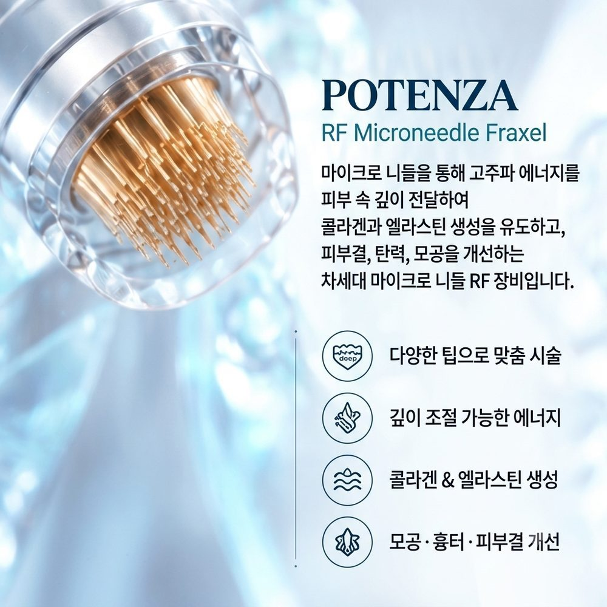
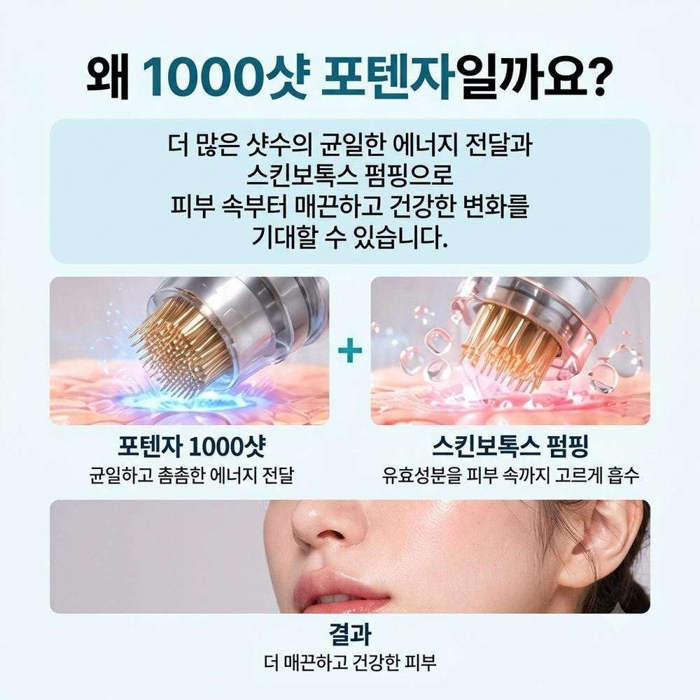
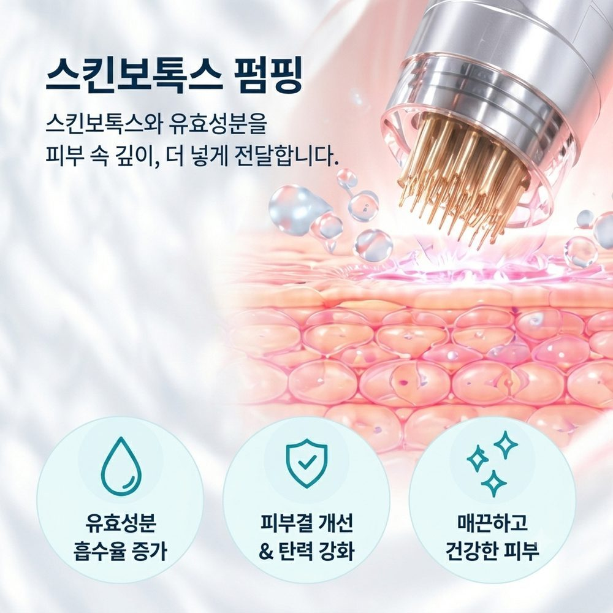
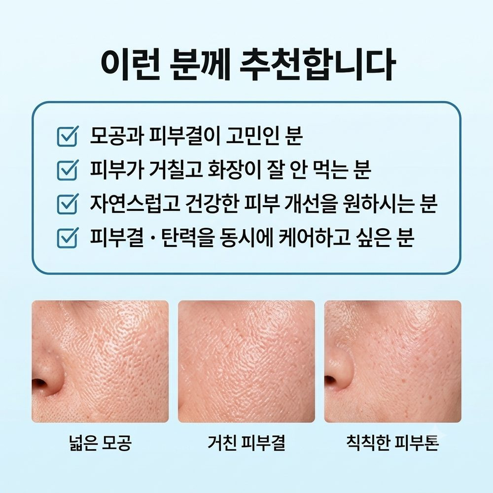
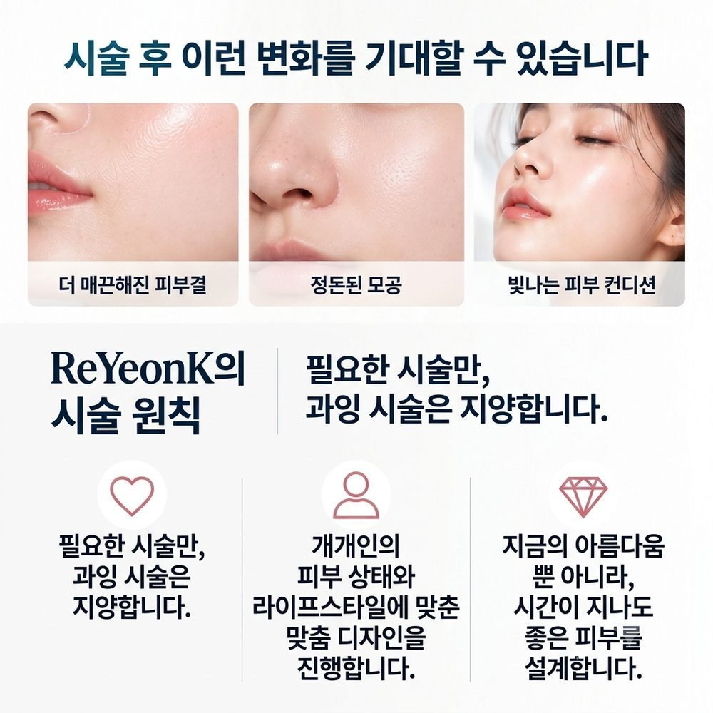
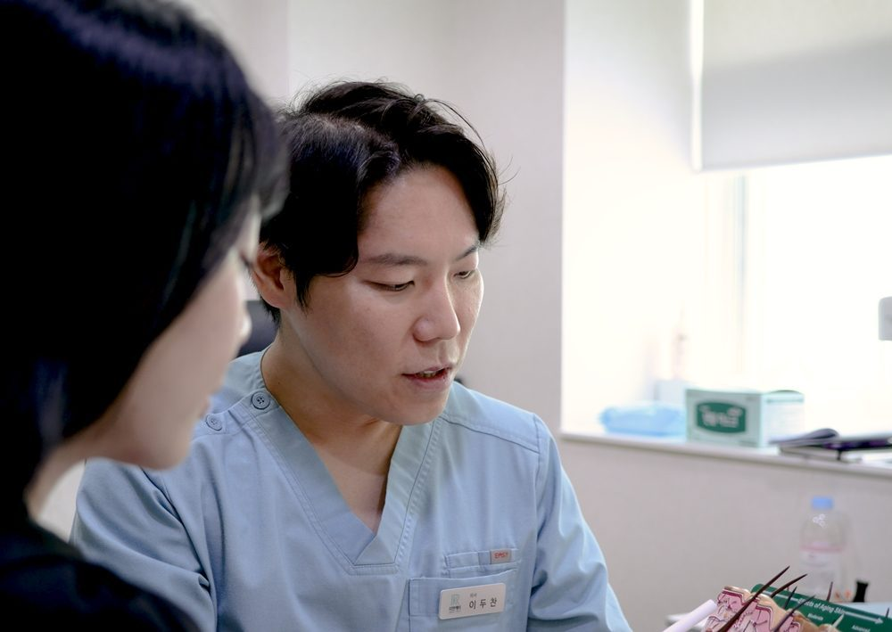

포텐자는 가격만큼 샷 수도 함께 비교해야 합니다.
리연케이의원의 천텐자(1000텐자) 이벤트는 포텐자 1000샷과 스킨보톡스를 함께 받는 구성입니다.
이 글은 리연케이의원의 포텐자 시술 안내(최종 검토일 2026년 10월 6일)와 이두찬 원장 칼럼을 바탕으로 작성했습니다.

포텐자(Potenza)는 마이크로니들과 고주파(RF) 에너지를 결합한 시술입니다. 아주 가는 바늘로 피부에 미세한 통로를 만들고, 바늘을 통해 고주파 열 에너지를 진피층에 전달합니다. 이 열 에너지가 섬유아세포를 자극해 콜라겐과 엘라스틴 생성을 유도합니다.
단극성·양극성, 절연·비절연 니들의 조합으로 고민에 맞춰 설계합니다.
표피를 보호하며 진피층에 에너지를 전달합니다.
피지선을 타겟으로 하며 모공 관리에 쓰입니다.
0.3~3.5mm이며 고민과 피부 상태에 맞춰 조절합니다.
같은 고주파 계열 시술과는 이렇게 다릅니다. 덴서티는 바늘 없이 면으로 고주파를 전달하는 방식이고, 버츄 RF는 같은 바늘 고주파지만 더 깊고 강한 시술입니다.
천텐자는 리연케이의원에서 진행하는 이벤트 시술의 이름입니다. 포텐자 1000샷이라는 뜻에서 천(1000)+텐자라고 부릅니다.


펌핑은 포텐자 마이크로니들을 이용해 스킨보톡스를 피부 속에 전달하는 방식입니다. 스킨보톡스는 얼굴 전체에 적용합니다.
천텐자(1000텐자) 이벤트가는 42.9만원(부가세 포함)입니다.
| 구분 | 구성 | 정상가 | 이벤트가 | 기한 |
|---|---|---|---|---|
| 천텐자(1000텐자) | 포텐자 1000샷(스킨보톡스 펌핑) + 스킨보톡스(얼굴 전체) | 82.5만원 | 42.9만원 (부가세 포함) | 2026년 11월 30일까지 |
울쎄라나 써마지를 받을 때는 샷 수를 먼저 묻지만, 포텐자는 상대적으로 샷 수를 잘 따지지 않는 경향이 있습니다. 그러나 이두찬 원장의 칼럼은 포텐자도 샷 수가 결과를 가른다고 설명합니다. 바늘과 고주파가 들어가는 횟수가 시술 범위와 촘촘함을 정하기 때문입니다.
다만 샷 수만 많다고 좋은 것은 아닙니다. 같은 장비라도 팁과 모드, 니들 깊이를 어떻게 설계하느냐에 따라 결과가 달라질 수 있습니다. 1000샷이 어느 정도 범위에 해당하는지는 얼굴의 시술 부위와 니들 깊이에 따라 달라지므로 상담에서 확인하시는 것이 정확합니다.
포텐자는 넓은 모공, 피부결, 탄력 저하, 여드름 흉터, 잔주름 고민에 많이 고려합니다.

효과 시기: 병원 안내 기준으로 첫 시술 후 4주부터 콜라겐 생성이 활성화되고, 3~5회 시술 후 모공·흉터·탄력 개선을 기대할 수 있습니다. 모공과 결은 2~3회 이후, 흉터는 5회 이상 꾸준히 관리하는 편이 효과적입니다.
지속 기간: 효과는 6~12개월 정도 유지되는 것으로 안내하고, 이후 6개월 주기로 유지 관리를 권장합니다. 효과와 유지 기간은 피부 상태, 나이, 시술 부위에 따라 개인차가 있습니다.

60~90분입니다.
시술 전 마취 크림을 바르며, 따끔거림이나 열감이 있을 수 있습니다. 느낄 정도는 개인차가 있습니다.
절연 니들은 1~3일, 비절연 니들은 3~5일 정도 붉은기와 거칠어짐이 남을 수 있습니다.
대부분 다음 날 메이크업과 일상 복귀가 가능하며 1주일 이내 거의 회복됩니다.
4~6주입니다. RF로 인한 콜라겐 재생 사이클이 약 4~6주이기 때문입니다.
3~5회이며, 정해진 총 횟수는 없고 보통 3~4회에서 방향이 잡힙니다.

상담에서 고려하는 고민: 넓은 모공, 여드름 흉터, 탄력 저하, 잔주름, 피부결
시술이 제한될 수 있는 경우: 임신·수유 중, 켈로이드 체질, 시술 부위 인근에 금속 임플란트가 있는 경우
부작용 가능성: 붉어짐, 따끔거림, 열감 등이 있을 수 있으며 개인차가 있습니다. 이상 반응이 있으면 바로 병원에 알려주세요.
스킨부스터, 줄기세포 치료, 레이저와 함께 할 수 있고, 여드름 시술과 병행하면 재발 방지에 도움이 될 수 있습니다.
리연케이의원의 이벤트 시술로, 포텐자 1000샷(스킨보톡스 펌핑)과 스킨보톡스를 함께 받는 구성입니다.
천텐자 이벤트가는 42.9만원(부가세 포함)이며 정상가는 82.5만원입니다. 이벤트 기한은 2026년 11월 30일까지이고, 실제 비용은 적용 범위와 니들 깊이에 따라 상담 후 확정됩니다.
시술 부위와 니들 깊이, 피부 상태에 따라 달라집니다. 샷 수는 결과에 영향을 주는 요소 중 하나이므로 상담에서 확인하시길 권합니다.
병원 안내 기준 4~6주 간격으로 3~5회를 권장합니다. 정해진 총 횟수는 없고, 보통 3~4회에서 방향이 잡힙니다.
첫 시술 후 4주부터 콜라겐 생성이 활성화되는 것으로 안내하고, 효과는 6~12개월 정도 유지됩니다. 개인차가 있습니다.
시술 전 마취 크림을 바르며, 따끔거림이나 열감이 있을 수 있습니다. 개인차가 있습니다.
대부분 다음 날 메이크업과 일상 복귀가 가능합니다. 다만 니들 종류에 따라 붉은기와 거칠어짐이 며칠 남을 수 있습니다.
포텐자는 마이크로니들을 이용한 바늘 고주파입니다. 덴서티는 바늘 없이 면으로 고주파를 전달하는 방식이고, 버츄 RF는 같은 바늘 고주파지만 더 깊고 강한 시술입니다.
천텐자 상담, 리연케이의원에서 받아보세요
포텐자 1000샷(천텐자) 이벤트는 2026년 11월 30일까지입니다. 직접 상담하시고 내 피부에 맞는 샷 수와 니들 깊이, 비용을 확인해 보세요.
※ 이 글은 일반적인 정보 제공을 목적으로 하며, 시술 효과와 유지 기간은 개인에 따라 다를 수 있습니다. 시술 안내 페이지(최종 검토 2026.10.06, 김현수·이두찬·최현호 원장 검토)와 이두찬 원장 칼럼을 바탕으로 합니다.